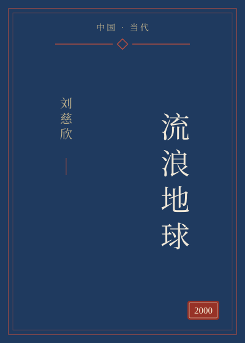
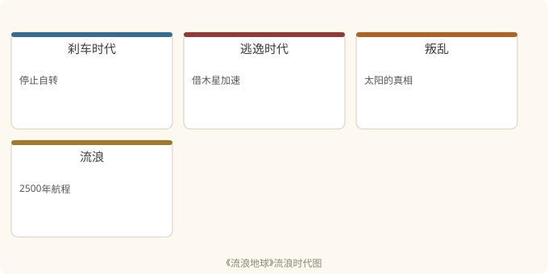

流浪地球
一、基本信息
| 作者 | 刘慈欣 |
|---|---|
| 成书/出版 | 2000年发表（通说待核；作者页 B088 口径——major_works 载'流浪地球、乡村教师等短篇'） Liu Cixin — Encyclopaedia Britannica（百科全书） |
| 国别/地区 | 中国 |
| 时代 | 现当代 · 当代 |
| 体裁 | 中篇科幻小说 |
| 语言 | 汉语（白话） |

《流浪地球》流浪时代图（主题·结构图）
二、创作背景
作者页（B088）：刘慈欣 major_works 载'流浪地球、乡村教师等短篇'——短篇时代的代表作（B088 作者页定位，详见 santi 条核对）。
设定：太阳氦闪——人类驾驶地球逃离太阳系（通说）。
三、内容脉络
刹车时代→逃逸时代→流浪时代：行星发动机推动地球（通说待核）。
'叛乱'与太阳的真相（通说待核）。
四、主要人物表
| 人物 | 身份 | 说明 |
|---|---|---|
| 我 | 地球时代的人 | 编年视角（通说待核） |
五、主题与艺术特点
- 带着地球去流浪：家园主义的科幻表达（通说）。
- 集体与个体的百年尺度（通说）。
- '行星发动机'的工程美学（通说）。
六、影响与评论
- 作者页：刘慈欣短篇代表作（B088 作者页口径）。
Liu Cixin — Encyclopaedia Britannica（百科全书） - 2019年郭帆电影改编开启中国科幻电影元年（通说待核）。
Liu Cixin — Encyclopaedia Britannica（百科全书）
七、阅读建议
难点
- 编年体时间跨度。
- 工程设定的硬核细节。
- 《流浪地球》（长江文艺出版社等版本，通说待核）。
先《流浪地球》后《三体》。
八、待核实
- 2000年《科幻世界》刊出核对。
- 电影2019年（郭帆说）细节待核。
- 氦闪设定与天文学事实核对。
本页主要来源
刘慈欣的其他收录作品：三体